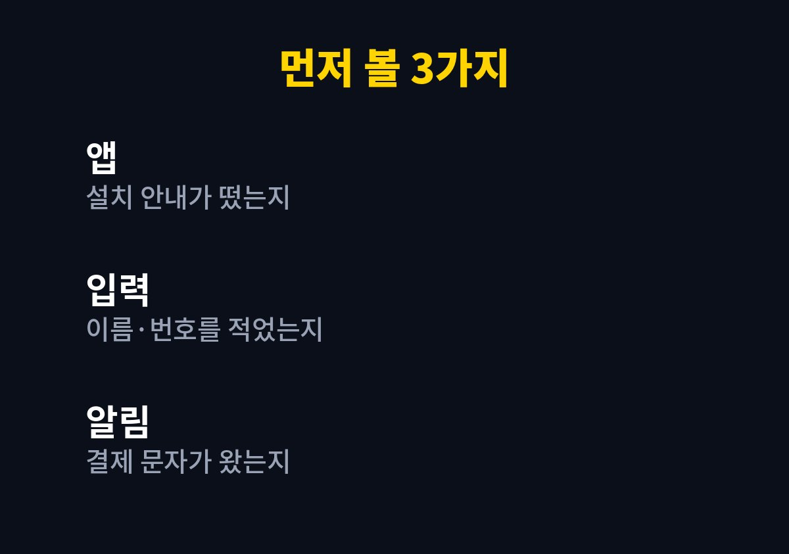
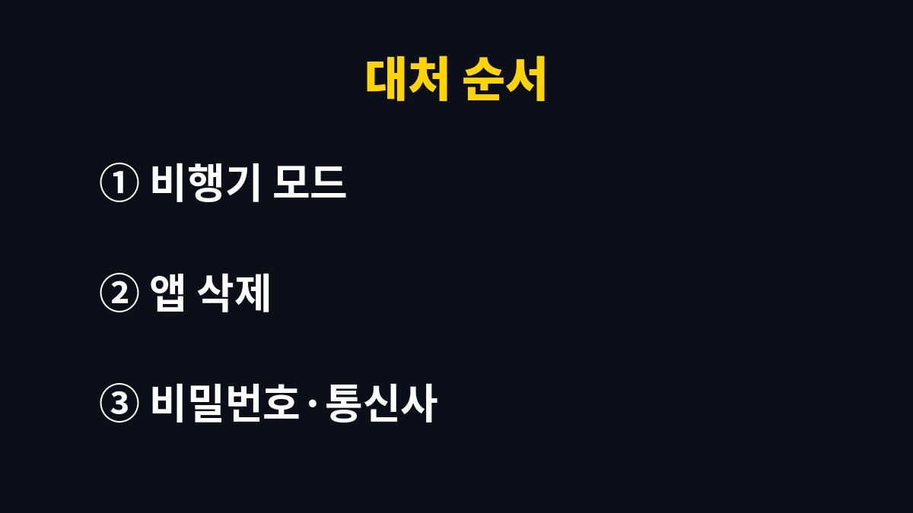

문자 링크를 잘못 눌렀을 때는 링크를 누른 것 자체보다 그 뒤에 앱이 설치됐는지, 정보를 입력했는지가 피해 여부를 가른다.
링크만 열고 바로 닫았다면 할 일이 적고, 앱을 깔았거나 이름·번호를 적었다면 해야 할 일이 훨씬 많아진다.
상황을 세 갈래로 나누어, 순서대로 확인하는 방법을 적었다.
택배 조회, 청첩장, 부고, 과태료 안내처럼 급하게 눌러 보게 만드는 문구가 대표적이다.
링크를 누르고 아무 화면도 뜨지 않았거나 흰 화면만 잠깐 보였다면 일단 안심해도 되는 쪽에 가깝다.
다만 '앱을 설치하라'거나 '보안 업데이트가 필요하다'는 안내가 떴다면 사정이 달라진다.
문자 속 주소가 짧게 줄여진 형태라면 누르기 전에는 어디로 연결되는지 알 수 없다.
그래서 발신 번호가 낯설거나 평소 쓰지 않는 서비스 이름이 적혀 있으면 누르지 않고 공식 앱에서 직접 조회하는 습관이 안전하다.
본인 확인을 한다며 이름, 주민번호 앞자리, 인증번호를 입력하게 하는 화면이 뜨는 경우가 있다.
여기에 적은 값이 있다면 그 값이 곧 유출된 정보라고 보고 움직여야 한다.
기억이 가물가물하면 브라우저 방문 기록을 열어 그 주소가 남아 있는지부터 본다.
같은 링크라도 눌렀다는 사실보다 그다음 행동에 따라 대처가 갈린다.
아래 표에서 내 상황과 가장 가까운 줄만 보면 된다.
택배 문자라면 송장번호를 택배사 앱에 직접 넣어 조회하면 링크 없이도 같은 정보를 볼 수 있다.
| 상황 | 확인할 곳 | 바로 할 일 |
|---|---|---|
| 링크만 열고 닫음 | 방문 기록, 알림 | 문자 삭제, 추가 클릭 금지 |
| 정보를 입력함 | 금융앱, 통신사 앱 | 비밀번호 변경, 해당 기관에 연락 |
| 앱을 설치함 | 설정의 앱 목록 | 비행기 모드 켠 뒤 앱 삭제 |
| 결제 알림이 옴 | 소액결제 내역 | 통신사와 카드사에 연락 |

아이폰은 문자 링크만으로 앱이 깔리는 경우가 드물어서 입력한 정보 쪽을 더 신경 써야 한다.
안드로이드 폰은 출처를 알 수 없는 앱 설치를 허용한 적이 있는지도 함께 본다.
의심 앱이 있다면 삭제보다 먼저 비행기 모드를 켜서 외부 통신을 막는다.
그다음 설정의 앱 목록에서 설치한 적 없는 앱이나 이름이 이상한 앱을 찾아 지운다.
삭제 버튼이 눌리지 않으면 기기 관리자 권한을 먼저 해제해야 하는 경우가 있다.
설치 시각을 알 수 있는 기기라면 문자를 받은 시각 전후에 깔린 앱을 먼저 의심한다.
앱 이름이 택배, 인증, 보안처럼 평범해도 아이콘이 없거나 기본 모양이라면 더 수상하다.

가장 흔한 실수는 문자를 지우고 끝내는 것이다.
문자를 지워도 이미 깔린 앱과 입력한 정보는 그대로 남아 있다.
반대로 불안해서 폰을 초기화부터 하는 경우도 있는데, 앱 삭제와 비밀번호 변경만으로 정리되는 경우가 많아 먼저 단계를 밟아 보는 편이 낫다.
다만 앱을 지워도 이상 결제나 알 수 없는 발신이 계속되면 서비스센터나 통신사에 점검을 맡기는 쪽이 빠르다.
이상 결제가 한 번 지나갔다고 해서 끝난 것이 아니어서 며칠은 결제 문자와 로그인 알림을 눈여겨본다.
가족에게 같은 문자가 갔을 수 있으니 부모님이나 아이 폰도 함께 확인해 두면 피해가 번지는 일을 막는다.
특히 앱 설치에 익숙하지 않은 가족 폰은 한 번 같이 열어 보는 편이 낫다.
당장 오늘 해 둘 일은 통신사 앱에서 소액결제 한도와 차단 설정을 열어 보는 것이다.
한도를 낮게 걸어 두면 설령 결제 시도가 들어와도 막히는 경우가 많아 부담이 줄어든다.
피해가 이미 났다면 혼자 해결하려 하지 말고 통신사와 금융사, 수사기관에 같은 날 연락하는 것이 가장 빠르다.
※ 2026년 기준 공식 안내를 바탕으로 정리한 글이며, 기기·앱 버전에 따라 메뉴 이름이 다를 수 있다.